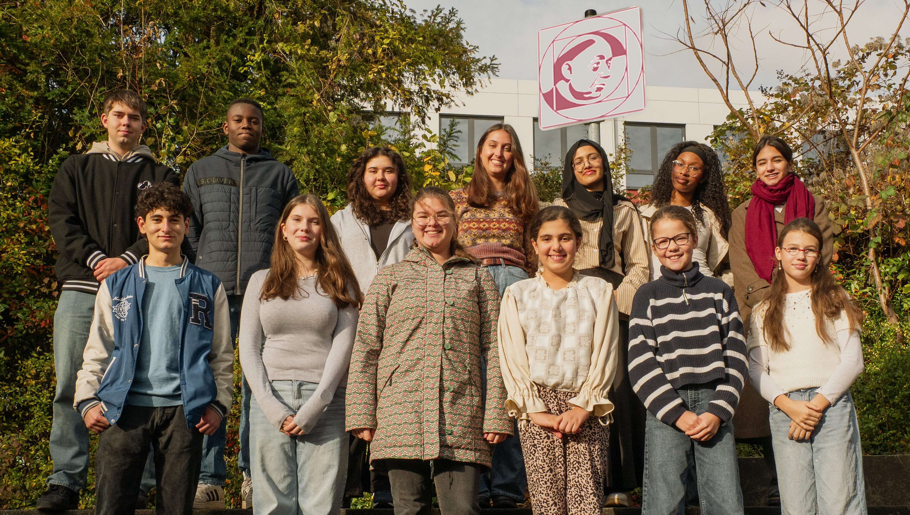

Hallo zusammen 👋,
wir sind die Schülervertretung (SV) am NCG!
Ihr kennt uns vielleicht aus Aktionen wie der Halloween-Feier, der Adventskalenderaktion oder den Rundgängen zum Weltfrauentag.
In unseren Sitzungen besprechen wir jeden Montag in der Mittagspause (im SV-Raum B01) Projekte für und Anliegen aus der Schülerschaft. Dabei werden wir von unseren Schülersprecher*innen geleitet und von Herrn Jost und Frau Beckmann begleitet.
Wir möchten Euch als unsere Schulgemeinschaft bestmöglich vertreten und freuen uns immer über neue Gesichter und Anregungen. Die SV-Arbeit ist ehrenamtlich und macht Spaß – wenn Ihr Ansprechpartner braucht oder mitmachen wollt, kommt einfach vorbei oder sprecht uns an!
Als Schülervertretung ist unsere oberste Priorität die Vertretung und Durchsetzung von Schülerinteressen. Wir reagieren auf Meinungen aus der Schülerschaft, handeln aber auch proaktiv mit eigenen Projekten.
Gemeinsam mit der Schulkonferenz setzen wir uns dafür ein, dass unsere Schule ein guter Lern- und Lebensraum bleibt, in dem sich alle wohlfühlen.
Wir sind das zentrale Bindeglied zwischen Schüler*innen, Lehrkräften und Schulleitung. Unsere Aufgaben sind:
Jedes Jahr organisiert die SV verschiedene Aktionen, um das Schulleben aktiv zu gestalten:
Uns ist wichtig, dass Ihr Euch als Teil der Schulgemeinschaft wohlfühlt und aktiv am Schulleben teilnehmen könnt.
Regelungen sind nicht in Stein gemeißelt – wir laden Euch ein, gemeinsam mit uns die Schule aktiv mitzugestalten!
📩 Meldet euch gerne bei Franziska Königshofen über Teams oder kommt einfach zu unseren Treffen vorbei.

Unsere Schülersprecher (v.L.):Elias Reiter, Sophie Ann Schwalfenberg, Franziska Königshofen und Sude Bayar